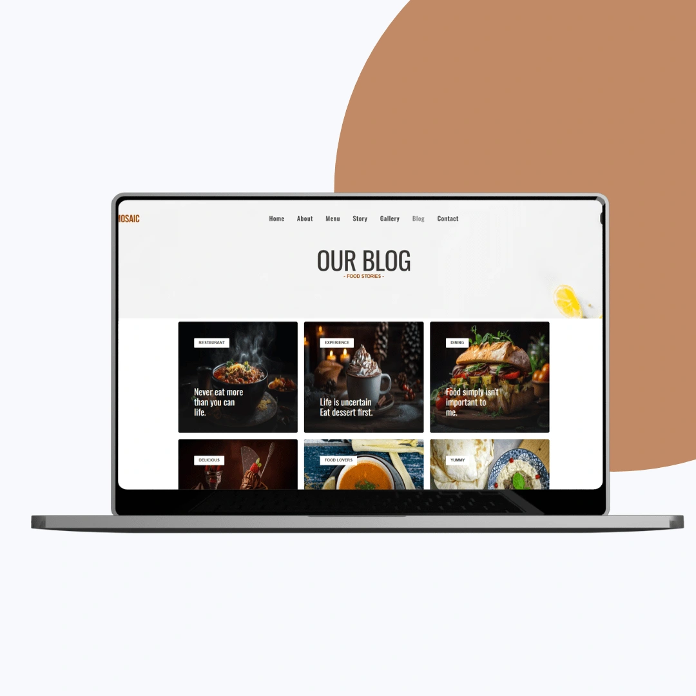

A restaurant booking platform built to make discovery and reservations effortless.
Tastemosaic is a restaurant booking platform that connects diners with top culinary experiences. I led the web design, development, and hosting, delivering a sleek, responsive site with detailed restaurant profiles, an intuitive reservation system, and premium menu displays.

The Objective
Tastemosaic needed a visually rich, fast-loading website that streamlined restaurant discovery and booking while matching the platform's premium positioning. The brief centered on a modern interface that enhances the reservation flow, an interactive menu showcase that helps restaurants highlight their offerings with flexibility, and hosting built for long-term performance, reliability, and speed.
The site had to serve users discovering restaurants by location, cuisine, or rating, alongside restaurant partners who needed an easy way to keep their profiles and menus current.


Our Approach
We structured the site around a smooth path from discovering a restaurant to reserving a table in just a few clicks, with a streamlined booking flow and minimal input steps. The design stayed clean, minimal, and elegant, using premium fonts and white space, with scroll-based animations and subtle hover effects on restaurant cards to bring the content to life.
Development used lightweight HTML, CSS, and JavaScript for fast loading and smooth performance across mobile and desktop, with dynamic components for menus, availability slots, and booking forms. An SEO-friendly structure and clean meta setup were built in to improve search discoverability.


Content Management, Hosting, and Outcome
To keep the platform dynamic, we implemented editable menu modules that support images, pricing, and categories, plus profile sections for descriptions, operating hours, and social links, so restaurant partners can update content without any coding knowledge. The site runs on high-performance hosting with SSL security, uptime monitoring, regular backups, and ongoing technical support.
The result is a streamlined reservation system that reduces user friction, interactive menu displays that encourage exploration, strong responsiveness on mobile, and flexible content management that keeps every listing fresh in real time.
